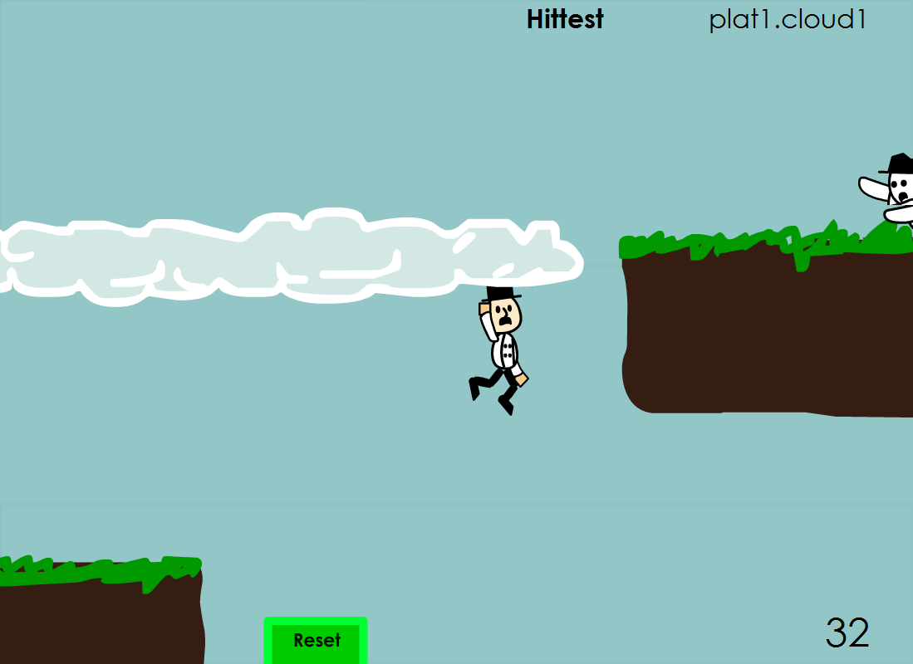

This game is built with AS3 in Flash CS4. I learned a lot from building this game and found it fascinating how collisions are handled and how the world actually moves inverted of where your character moves in order to side-scroll with the game.

This screenshot shows how there is a tree collision checking system for checking which platform peice you are touching.